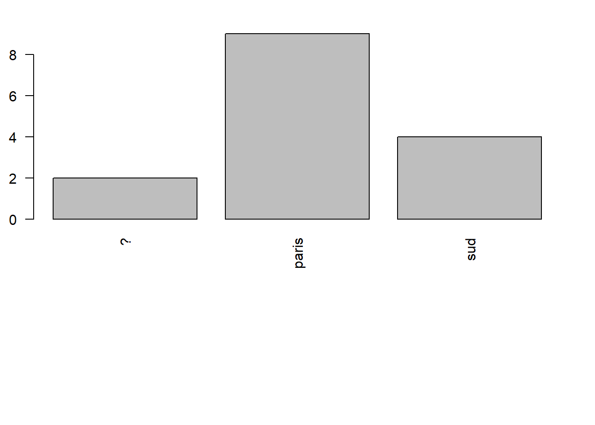
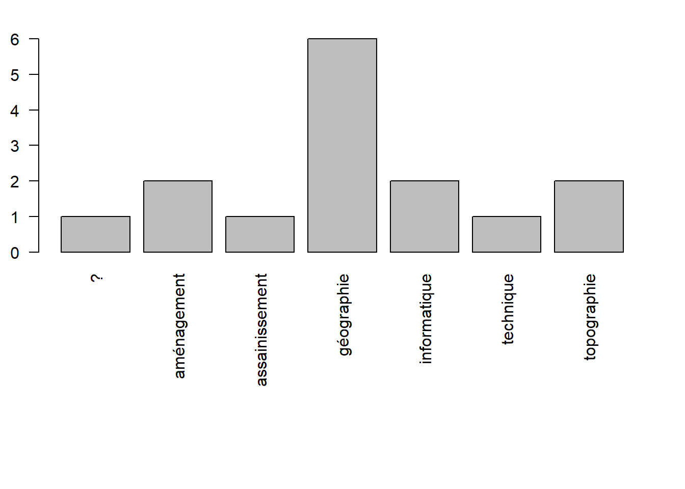
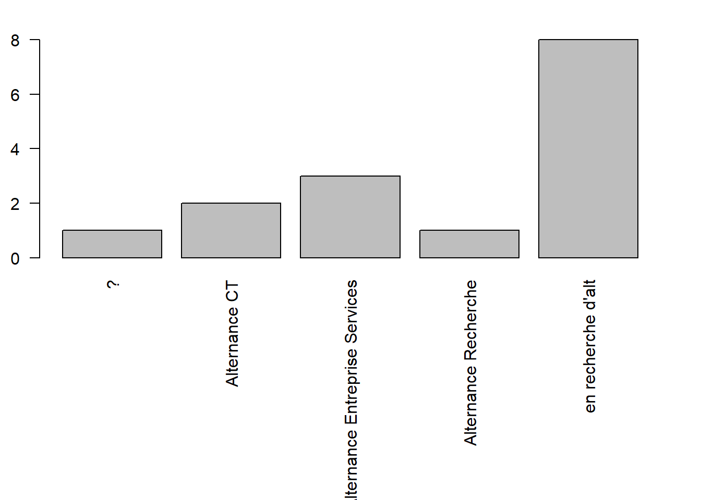
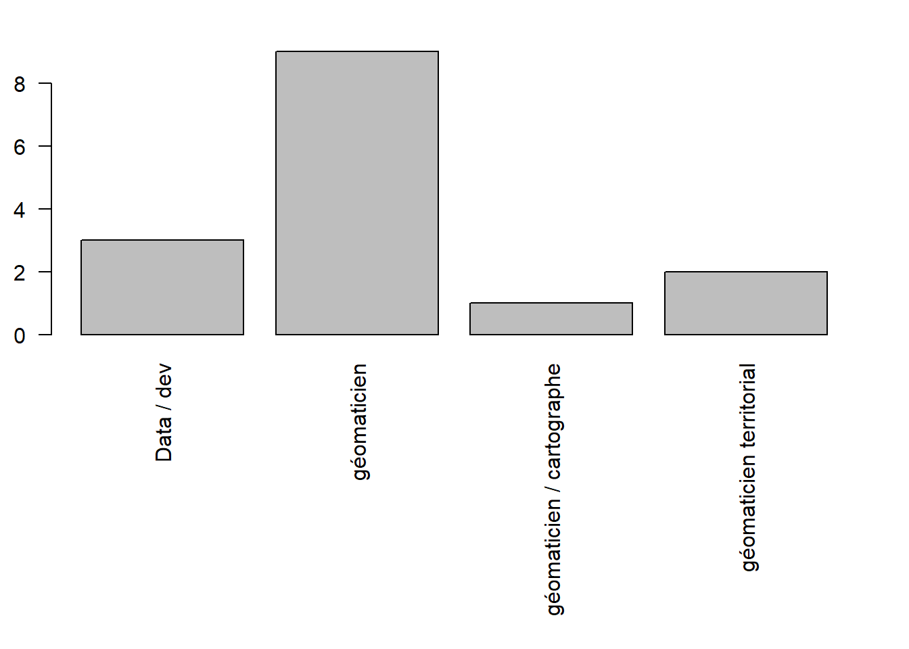

Code
# stats temps / séquence
temps <- read.csv("data/tps.csv")
sum(temps$tps, na.rm=TRUE)[1] 1100Faire un plan de ville kalos kagathos (καλὸς κἀγαθός) avec OSM.
A distribuer
Qu’observe t on ?
les noms des rues : ils sont tous présents mais sous quel forme ?
les différents bâtiments
le graticule / la liste des rues / la liste des bâtiments
Autres remarques.

extraction du plan sucette de la ville
voir notamment le menu cartes
Il va servir pour la présentation, la répartition des tâches etc… Framapad Paris 8
Faire une recherche internet pour définir OSM.
Questions :
Quelle différence entre openstreetmap.org et openstreetmap.fr
Que faut-il retenir des 10 commandements ?
Créer son profil sur openstreetmap.org, attention au pseudo.
Paramétrage F12 pour lien remote
serveur OSM
contrôle à distance
Qui connait Qgis ? quel niveau ? (remplir le framapad) => définir des étudiants ressource
Il s’agit de mettre en place un cercle vertueux dans l’utilisation d’OSM : extraire, contribuer, vérifier sa saisie en extrayant de nouveau et contribuer pour l’améliorer.
JOUR 1 : Présentation et faire une première carte de la ville à partir des données OSM principalement.
JOUR 2 : Répartition du zonage par bureau de vote et étude des rues OSM (nom et typologie : place et ponts)
JOUR 3 : Bâtiments, comment valoriser l’emprise du terrain qui les contient ? et carte finale,
Pour finir, nous évoquerons la possibilité de traitement reproductible. Si les données changent, la carte évolue également.
Au niveau du temps, cela donne :
# stats temps / séquence
temps <- read.csv("data/tps.csv")
sum(temps$tps, na.rm=TRUE)[1] 110010 mn de trop et sans compter les pauses… 15 mn toutes les 1 H 30
Voir également heures de repas et 1er jour
Pour chaque séquence, plusieurs cartes et des quizz pour valider les termes précis. pas d’évaluation officielle.
Mais une évaluation collective, de type, combien d’éléments rajoutés dans OSM et un essai de mesure de leur qualité.
Eviter absolument le retour de bâton OSM, notamment pour il y a deux ans.
Donc, impérativement mettre dans le commentaire de changeset : #Paris8-Bondy2024

Egalement, examiner les contributions dans le détail avec les outils de contrôle de qualité d’OSM : chez neis
Un mot au sujet du collectif, ce cours est aussi l’occasion de tester une organisation de travail en groupe (c’est la raison d’être d’OSM) donc répartition des étudiants par bureau de vote (2).

L’attribution se fera par une carte umap
Le support, fait sous R Quarto, sert uniquement de “fil rouge”.
Les procédures employées sous QGIS sont à rechercher sur internet.
Essai : “Qgis compter les points dans un polygone” Quel est le menu qui permet de le faire ?
Le dépôt des cartes se fera sur le partage réseau.
Au niveau de la zone de recherche, taper
\\C210-PSélectionner ensuite le répertoire partage géographie et OSM, clic droit Ajouter un raccourci rapide
Déposer son image dans le répertoire img/cartes avec comme syntaxe : prenom.png
En utilisant l’icone à droite du cours, copie du projet GIT en début et en fin de session (via l’option download zip)
passé / présent / futur / attentes par rapport OSM / niveau QGIS fichier framapad, celui qui parle, celui qui écrit
sur le framacalc
Ce fichier va permettre de s’attribuer les zones de saisie et toutes les opérations collaboratives du cours.
data <- read.csv("data/etudiant.csv")
table(data$passé.lieu)
? paris sud
2 9 4 par(mar = c(12,2,2,2))
barplot(table(data$passé.lieu), las = 2)
barplot(table(data$passé.thème), las = 2)
barplot(table(data$présent), las = 2)
barplot(table(data$futur), las = 2)
quelle diffusion ?
séquence 2 https://framaforms.org/paris8-bondy2023-premiere-saisie-1693156617
séquence 3 pas de quizz, car surtout des cartos.
Évaluation de satisfaction https://forms.gle/R5W9DooDPMmRn3kF6
une référence en livre : QGIS Map Design - Second Edition by Anita Graser and Gretchen N. Peterson
features souvent très lent
taginfo plus rapide